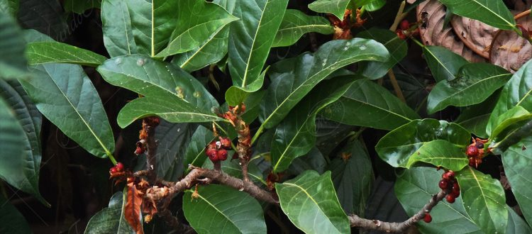

-
Contexto social y politico del destino
-
La ciudad de San José, ubicada en costa rica, siendo esta su capital destaca por ser un excelente lugar para vivir, con una biodiversidad ecológica considerando al menos el 5% de la biodiversidad mundial, también tiene un valor histórico y arquitectónico.Su mayor autoridad como ciudad es el alcalde, debido a considerarse el año 2016 como el poder ejecutivo de la ciudad, Johnny Araya Monge.
-
Flora y fauna
-
Relieve: El área total de Costa Rica es de 51.100 km2 siendo así que San jose ocupa un 44.62 km² de la superficie. El país esta divido en 7 provincias: Guanacaste, Puntarenas, San José, Heredia, Puntarenas, Limón y Cartago. Costa rica tiene un considerable número de volcanes activos y el cerro Chirripó es considerado su punto más alto ubicado a 3,821. Sobre el nivel del mar.
Está ubicada en centroamerica por lo que se encuentra en la zona intertropical (es la franja que se ubica entre los trópicos de Cáncer y de Capricornio), dicha zona es considerada con la mayor biodiversidad del planeta)
El 26% del territorio de Costa Rica posee áreas protegidas, siendo esto uno de los ecosistemas más grandes del mundo junto con una gran superficie marítima.
Flora: Cuenta con más de 12.000 especies de plantas, heliconias, helechos, flores, y el mayor número de orquídeas del planeta. Su flora es una de las más conocidas y estudiada del planeta, se conoce aproximadamente el 95% de las especies existentes.
Entre su flora mas destacada tenemos:
Tabacón o Anthurium upalaense:
Ubicada mas que todo en los bosques humedos y florece durante todo el año mayormente en jardines.
-
Flor de la pasión o Passiflora chimuensis: Es una flor que solo se encuentra en costa rica, de gran tamaño y crece mayormente en bosques.

-
Higuerón colorado o Ficus costaricana:
Es un arbol del gran tamaño ,crece hasta los 12m de altura y en los bosques humedos ,es un arbol que vive sobre la corteza de otras especies

-
Fauna:
Cuenta con aproximadamente 500.000 especies de vida silvestre, y unas 300.000 son insectos,como mencionamos anteriormente es uno de los lugares con mas biodiversidad del mundo , por lo que cuenta con muchisimos tipos de animales,insectos,hongos,esto debido a su posicion geográfica,representa el 6% de las especies de todo el mundo.
-
Entro los animales de Costa Rica destacamos estas especies:
Venado de cola blanca o Odocoileus virginianus:
Este animal es uno de los más representativos, fue declarado simbolo de la fauna de costa rica en 1995,pero lamentablemente se encuentra en peligro de extincion.
-
Zorro pelón o Didelphis virginiana:
Mamifero muy conocido de costa rica,se ubica en el norte y se caracteriza por su pelaje blanco/amarillento. Otras especies que se destacan son los monos congos, los osos perezosos, los pelícanos, los colibrís, los tucanes, las iguanas, los cocodrilos, la mariposa monarca, escorpiones, entre otros.
-
Promoción al producto local
-
Mercado municipal de artesanías:
Este mercado es uno de los más visitados y conocidos de san jose ya que rescata la identidad y la cultura del destino, venden artesanías y productos inspirados en la ecología de costa rica su flora y fauna, en su mayoría son negocios familiares y de artesanos locales.
Este mercado se ha encargado de entregar un servicio de excelencia, y darle valor a la cultura
Dirección: Calle 5 y 7, avenida 6, frente al Parque de las Garantías Sociales, 200 metros sur de la Caja del Seguro

-
Museo y Mercado de Indígenas de Costa Rica Chietón Morén
-
Este museo está basado en rescatar la artesanía basada en las comunidades indígenas, dando un espacio no solo para ver y comprar sus artesanías, si no también ofrece charlas totalmente gratis para conocer y escuchar la historia de las comunidades indígenas, exponiendo asi su riqueza y su diversidad cultural, contando asi con más de 250 artesanos y más 3500 productos diferentes.
Ubicación 25 mts sur de la esquina sureste del Museo Nacional

-
Sustentabilidad
-
Costa Rica se le reconoce como una de las economías más verdes del mundo y las autoridades deben continuar con este proceso y hacer notar que el gobierno apoya a las empresas para mejorar la sostenibilidad.
Costa Rica está en el puesto 50 a nivel mundial de la sustentabilidad y en el puesto 4 en américa latina.
Por eso la municipalidad ha desarrollado un plan: “San José sostenible es un espacio metropolitano en el cual el cantón central contribuye al desarrollo humano, a través de una gobernanza clara y participativa. Esta se inspira en el acceso a los servicios, una movilidad humana y funcional, una ciudadanía segura, un ambiente de alta calidad, la autosuficiencia financiera y la eficiencia energética.” – Autores del Plan
El objetivo principal del programa de ciudades emergentes y sostenibles, es convertir a San Jose una ciudad sostenible en su funcionalidad y desarrollo, para que el sector público y privado como la sociedad civil, puedan intervenir cordialmente en el desafío de lograr una sostenibilidad urbana frente al cambio climático.
San José tiene una necesidad de continuar creando una infraestructura urbana moderna y eficiente, que contribuya a asegurar su conversión a un espacio con condiciones óptimas.
El principal objetivo es atraer una inversión de alta tecnología y vivienda para ciertos sectores y desarrollar el proyecto ciudad gobierno para regeneración urbana que trata de usar los bordes del rio maría Aguilar como corredor biológico como área residencial y recreacional.
Esto afecta de manera inteligente la movilidad humana, el manejo de residuos sólidos, la sanitización de ambientes que incluye el tratamiento, el drenaje pluvial y el acceso a agua potable son prioridades de San José.
‘’El plan de descarbonización consiste en mantener el crecimiento económico en una curva ascendente y al mismo tiempo generar una curva descendiente en el uso de combustibles fósiles para dejar de contaminar’’ fue lo que dijo el presidente de Costa Rica, Carlos Alvarado Quesada. Para el 2050 el objetivo es tener cero emisiones netas.
“¿Cómo se genera eso? Transporte público limpio, ciudades inteligentes y resilientes, manejo adecuado de residuos sólidos, agricultura sostenible y una mejor logística”, añadió.
El 98% de la energía es renovable, y la cubierta forestar alcanza más de 53% del territorio después de un largo trabajo para revertir la deforestación y una cuarta parte de las zonas terrestres se han convertido en áreas protegidas o reservas.
“Hace 70 años, Costa Rica abolió las fuerzas armadas y optó por ser un país de paz y por muchos años ha tenido educación pública, gratuita y obligatoria para los niños. Y hace cerca de 50 años, el país empezó a avanzar en una serie de políticas ambientales innovadoras, porque el paradigma de desarrollo sostenible está en el ADN de los costarricenses”
Para el 2050 todos los autobuses y taxis públicos será cero emisiones y en 2022 se construirá un tren eléctrico que proporcionará transporte en la ciudad.
-
Cultura
-
Se dice que la población de Costa Rica es una de las más felices del mundo por sus costumbres y festejos. Uno de ellos es El Desfile de los Faroles: Todos los 14 de septiembre, las calles de Costa Rica se llenan de luces en la víspera de celebración del día de la Independencia de Costa Rica. Como parte de la cultura del país, los estudiantes de primaria y secundaria crean faroles y desfilan por las calles de la ciudad para llegar al colegio y cantar el himno nacional y ver el recorrido de la representación de la antorcha.
También el destino es rico en elementos culturales y folklore. Tiene influencias culturales, como la mayor parte de los indígenas de América Central, españoles y de las poblaciones negras que provienen de África y Jamaica.
-
Cambio de moneda
-
El colón costarricense, llamado así en honor al almirante Cristóbal Colón, es la moneda oficial de la República de Costa Rica
1 colon = 1,36 CLP
-
Servicios de alojamiento, restauración y transporte
-
Alojamiento:
A solo 10 mn del aeropuerto, Luna Inn , es el lugar perfecto para conectar con la naturaleza, para hospedarse cuenta con casas de estilo colonial, ubicado alrededor de naturaleza alrededor del 75% del lugar es selva, en este alojamiento se pueden ver cientos de especies de aves y monos, cuenta con una cascada propia del lugar y así mismo una piscina alrededor de un enorme jardín.
Alojamiento que se encarga de:
- Protege la flora y la fauna dentro y fuera de su propiedad; los animales salvajes no se mantienen en cautiverio y no son alimentados.
- La mayoría de los empleados contratados son de las comunidades aledañas, creando así empleo y estabilidad económica para las comunidades locales.
- Las pequeñas empresas locales son preferidas a la hora de comprar alimentos, artesanías y servicios como turismo, transporte, diseño de muebles, elaboración de artesanías y otras estructuras hoteleras, generando estabilidad económica para las comunidades aledañas.
- Programas de ahorro de agua
- Programas de ahorro de energía
- Programas de manejo de residuos sólidos como el reciclaje.
- Uso de productos naturales biodegradables de origen local (champú, acondicionador, jabón de manos y cuerpo, y todos los productos utilizados para la limpieza del hotel)
- Control de plagas a través de productos biodegradables, no tóxicos y amigables con el medio ambiente
- Luna Lodge es 100% autosuficiente energéticamente:
- La electricidad para toda la iluminación y los enchufes eléctricos en toda la propiedad se produce a través de nuestra propia planta hidroeléctrica y paneles solares.
- una biblioteca con información sobre la flora y la fauna de Costa Rica
- folletos de promoción de áreas naturales protegidas en Costa Rica
Posee Calificación de Cinco Hojas para el Turismo Sostenible por parte del Instituto Costarricense de Turismo.
Dicho alojamiento está enfocado en la protección, preservación y concientización sobre la selva tropical, así como también en la agricultura orgánica, para producir los alimentos para los huéspedes, cosechando así, perejil, apio, cúrcuma, orégano, albahaca, mostaza, jengibre, cilantro y muchos más.
Posee otro jardín lleno de hierbas y verduras, con árboles frutales, donde se encuentra el banano, el plátano, el mango, la manzana de agua, la papaya, la fruta china, la mandarina, el limón, el cacao, el aguacate, la yaca, el mangostán morado y el marañón. También se cultivan judías verdes, remolacha, maíz dulce y piña.
Brindándole así a sus huéspedes gastronomía natural y de calidad.
Entre las actividades que se pueden realizar tenemos:
Cascadas:
Posee 3 cascadas que se encuentra en medio de plantas, árboles, pájaros, insectos, mamíferos y, por supuesto, agua pura y fresca, es perfecta para relajarse y escuchar el ruido de la naturaleza.
Bucle del sendero dorado
Es un sendero increíble para caminar en medio de la naturaleza, sube desde un arroyo hasta la cima de la selva tropical, donde se encuentra un mirador con una hermosa vista.
Estudio de las estrellas
Cuenta con un telescopio que apunta hacia el cielo, perfecto para apreciar las constelaciones, contando con guías y libros disponibles para entender mejor las estrellas que se visualizan.
Cuenta con actividades de Natación totalmente gratuitas.
Sesiones de Yoga
Excursiones guiadas de senderismo
-
La sabana hotel
Es un hotel ubicado en medio de jardines y terrazas, se encuentra en el centro de San José ,ofreciendo un servicio personalizado y una excelente experiencia para todos los que lo visitan, ofrece servicio diario de limpieza, room service, parqueo privado, lavandería, sala de sesiones, recepción, desayuno al lado de la piscina, sauna, spa , transporte privado y la tienda Sostenible Fair Trade que ofrece productos hechos por artesanos locales de comunidades marginales rurales de Costa Rica, también algo muy peculiar es que ofrece todos los miércoles clases gratuitas de español.
Ofrece distintos tipos de habitaciones, desde tipo apartamentos hasta suites de lujo y accesibilidad para personas en silla de ruedas.
Es un hotel 100% enfocado en la sustentabilidad, obtuvo en el 2013 Certificado de Turismo Sostenible (CST) emitido por el Instituto Costarricense de Turismo (ICT).
Dicho hotel tiene un programa para ayudar a la comunidad, ofrece ayuda a sus trabajadores que no han terminado su educación, así como también tiene en su página web una sección para fomentar el turismo sustentable, donde desglosa los siguientes puntos para que todos sus huéspedes estén consientes a la hora de visitar costa rica:
Seleccione productos y servicios que hagan una diferencia positiva.
Utilice transporte público en vez de taxis.
Baje la temperatura del agua al utilizar la ducha.
Recoja sus residuos. ¡Deje atrás solo huellas, no desechos!
Participe en programas sostenibles cuando los haya.
Compre y participe a nivel local.
Aporte sugerencias sostenibles. ¡Trabajemos como equipo para ser más verdes!
-
Gastronomía
-
Doris Metropolitan.
Este restaurante es uno de los mas conocidos,ya que esta asociado con una finca para extraer la mayoria de sus alimentos de forma mas natural
Recomendacion del chef:Lomo Chateaubriand
-
Tin Jo.
Aca vamos a poder apreciar la comida tipica costarriquense en su maximo explendor ,se encuentra en una hermosa hacienda colonial lo que hace inolvidable su visita.

-
. La Terrasse.
Es un restaurante con ambiente hogañero basado en la comida francesa pero con ingredientes tipicos de costa rica ,que es lo que lo hace especial.

-
***Transporte
La opción que recomendamos más en viajes internacionales es tomar Uber desde la aplicación, y de esta forma llevar un seguimiento seguro del viaje, a diferencia con un taxi que se toma en cualquier lado sin fiscalizacion asegurada.
-
Actividades por realizar
-
si gustas de visitar teatros, san jose tiene varios teatros, destacados por su arquitectura neoclásica, barroca y neobarroca, que son grandes atractivos turísticos y constantemente ofrecen obras teatrales, presentaciones culturales y artísticas, entre otras actividades y eventos. En la capital existen tres teatros principales que puedes visitar, Teatro nacional de Costa Rica.
-
Teatro variedades
-
Teatro popular Mélico Salazar
-
Por otro lado, el teatro del auditorio nacional es uno de los más versátiles del país, del cual se presentan conciertos de música clásica, nacionales e internacionales, certámenes de belleza, presentaciones audiovisuales, conferencias, seminarios, obras de teatro, etc.

-
Museos
-
Fachadas de los Museos Nacional y de los Niños (mismo teatro del auditorio naciona).

-
Museo del oro precolombino, ubicado bajo la plaza de la cultura
-
Espacios publicos
-
El parque metropolitano la sabana: En san José nos encontramos con más de 490 áreas verdes, pero nos vamos a enfocar en la más visitada que es el parque metropolitano la sabana, llamado también como el pulmón de san José, el cual cuenta con 72 hectáreas, ubicado al oeste de la ciudad en el distrito de mata redonda.
Es patrimonio histórico y arquitectónico de costa rica desde el año 2001, cuenta con canchas para futbol, basquetbol, tenis, piscina, y un gigantesco lago, sin contar la enorme biodiversidad de árboles, plantas y aves, que llegaran a sorprendernos en nuestra visita al lugar.


-
También encontramos el parque zoológico Simón Bolívar, que cuenta con una variedad de animales, la laguna del parque bolívar, el cual se considera como un humedal protegido, y entre ellos también el jardín botánico nacional, dedicado a la conservación de hábitats con especies de la flora de costa rica en un vivero.
Esta ubicado al noreste de san José, distrito del Carmen.

-
Circuitos y recorridos posibles
-
La Plaza de las Artes está ubicada en el centro de San José en donde será un buen lugar para descansar después de una larga caminata. Luego está el mercado de las artesanías en donde usted podrá comprar dichos productos. Lo bueno de esto, es que también la plaza de las artes está pasando la puerta del Barrio Chino. Luego, si gusta de la naturaleza se puede recorrer el Parque España, en donde hay grandes y frondosos árboles. Lo bueno de este parque, es que también está muy cerca del centro de la ciudad.

-
¿Que necesito llevar?
-
No es necesario tener el carnet de vacunación completo
Chilenos no requieren de Visa para entrar a costa rica, sin embargo, tienen máximo 90 días para visitar el país
Pasaporte vigente mínimo 6 meses
Boleto de ida y vuelta
Probar solvencia económica para su estancia en el país.
Recomendaciones: Aunque el uso de mascarilla no es obligatorio, se recomienda mantener el protocolo de lavado de manos y toma de temperatura, así como el cumplimiento de los protocolos sanitarios en cada actividad turística.
No es obligatorio para chilenos, pero se recomienda la vacuna contra la fiebre amarilla
Costa rica no exige seguro obligatorio, pero siempre se recomienda viajar con uno
-
Recomendaciones acerca de el clima
-
Debido a su ubicación en el trópico, la altura de la ciudad suaviza los efectos del clima tropical, gracias a la brisa proveniente de las costas. En su mayor parte considera un clima templado y subhúmedo, con una sensación térmica primaveral a lo largo de todo el año. Específicamente en la ciudad de san jose, su promedio no sobrepasa los 22° C, con mañanas despejadas y un agradable clima entre 12 y 28 °C.
Sus estaciones están marcadas por el verano como la época más seca y el invierno lluvioso.
Sus precipitaciones anuales aproximan 2000mm.